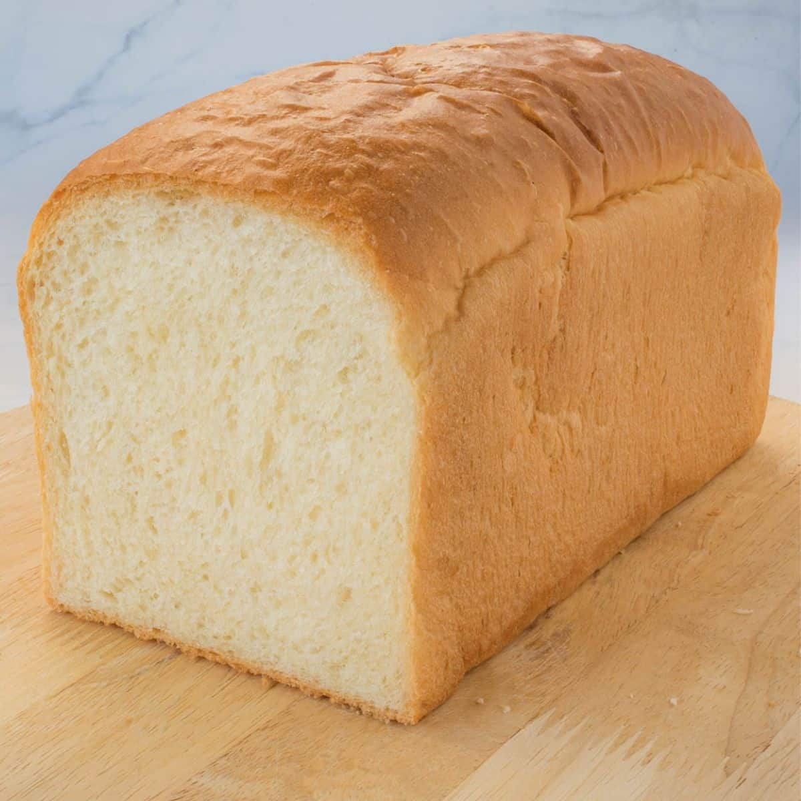
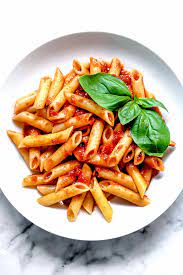

Just some of my favorite foods
What an interesting website. Bread or pasta? Either one is great.
Just bread here. BREAD

Just pasta here. PASTA

Actually I have another favorite like strawberries
_single2.jpg) in which they're very good too.
in which they're very good too.
Woah I guess this might be what an embedded image does.
Now here are some interesting food facts.
- Did you know that cheese is the most stolen food in the world?
- Chocolate was once used as a currency back in the time of the Mayans
- Bananas are berries due to reaching the requirements of what counts as a berry (develops from flower, has several tiny seeds, and contains one single ovary
- Baked beans are not baked but are cooked using a steam process
Here's a recipe on how to make Flan!
Flan Recipe- 1 3/4 cups of heavy cream
- 1 cup of whole milk
- 1 tsp. pure vanilla extract
- Pinch of Koshar Salt
- 1 1/2 cupgranulated sugar, divided
- 3 large eggs
- 3 large eggs yolk
Fruit Facts |
||
|---|---|---|
| Scientific name/kingdom | Fruit name | Place origin/picture |
| Malus domestica | Apple | Kazakhstan |
| Plantae | ||
{kind=link}